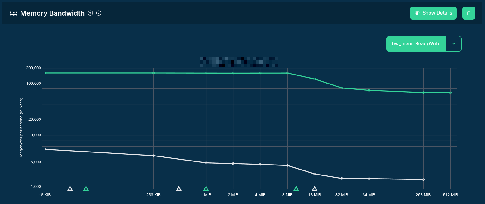
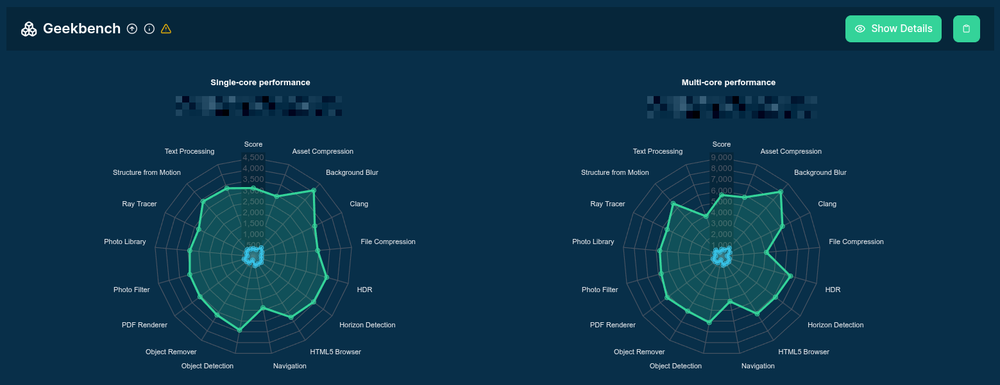
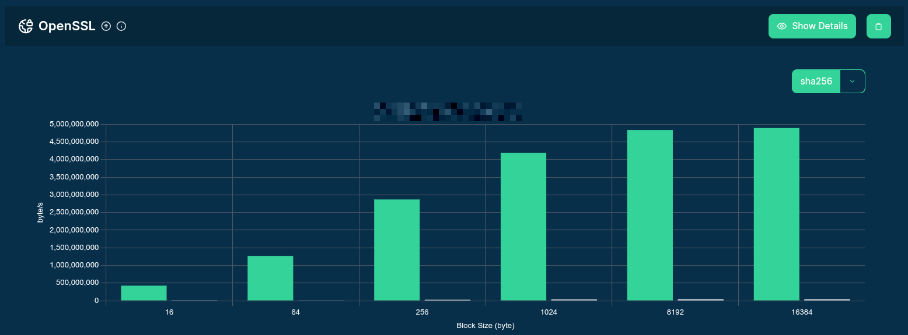
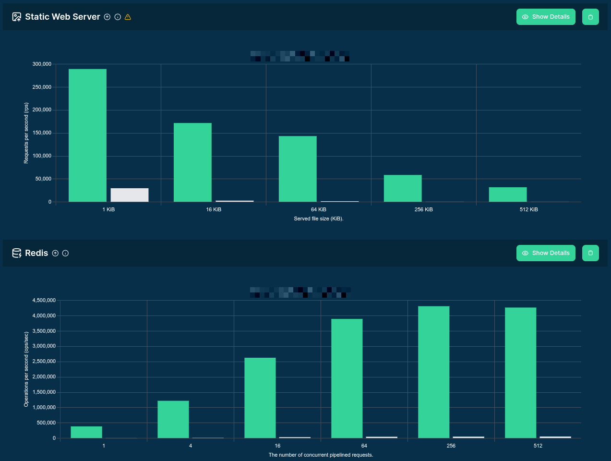
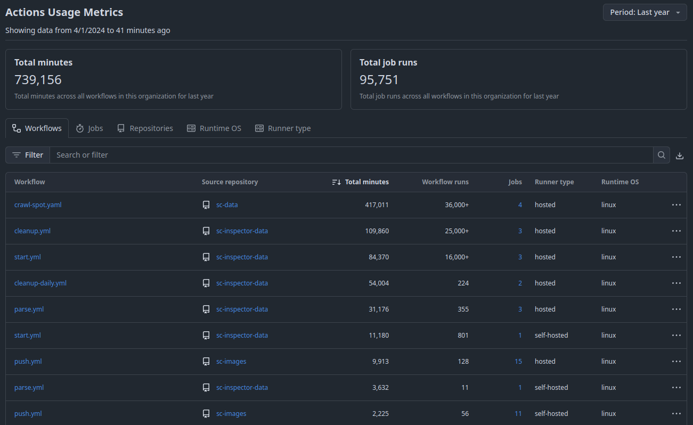
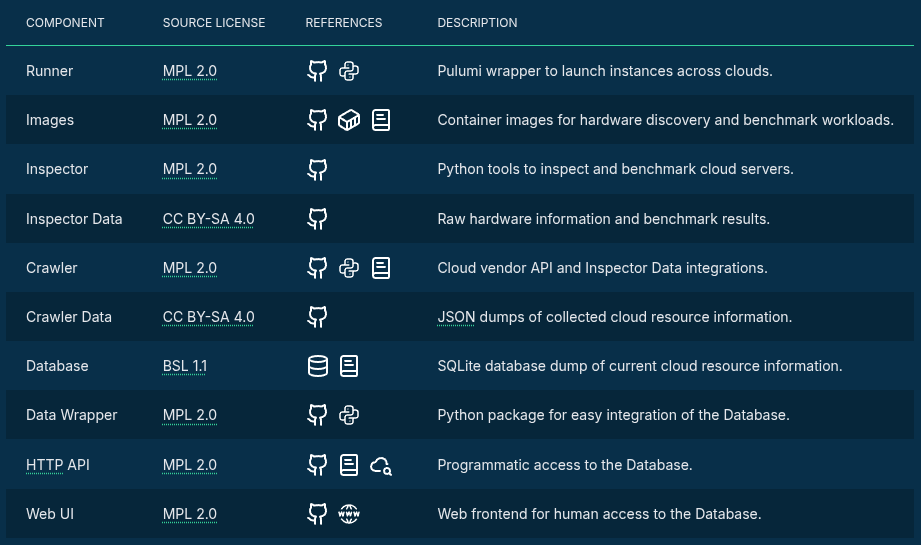
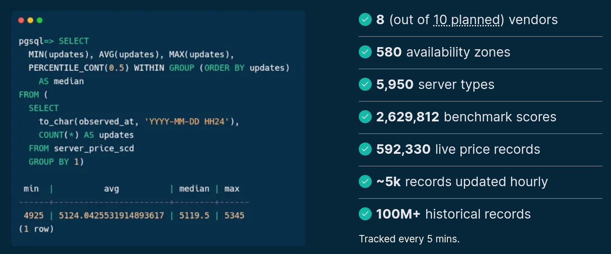

Data-Driven Instance Selection
Gergely Daroczi
2026-11-02
Data-Driven
Instance Selection
Gergely Daroczi, Spare Cores
Nov 2, 2026 @ Amsterdam, Netherlands
Slides: sparecores.com/talks
Press Space or click the green arrow icons to navigate the slides ->
Guess the Number!
How much better is the highest performing 2-vCPU cloud server's single-core performance compared to the lowest?
Your guesses
| SERVER A | SERVER B | |
|---|---|---|
| Vendor | Hyperscaler | Hyperscaler |
| Server SKU | 👻 | 👻 |
| vCPUs | 2 | 2 |
| Architecture | x86_64 | x86_64 |
| Physical cores | 1 | 2 |
| CPU allocation | Shared | Dedicated |
| CPU (turbo) frequency | 2.2 GHz | 5.0 GHz |
| CPU L1D cache | 32 KiB | 96 KiB |
| Memory | 1 GiB | 8 GiB |
| Single-core SCore | 133 | 4,645 |
| Performance ratio | x34.92481 | |

30-50x

10-20x

100x

10-100x


$ whois sparecores.com
- Funded by NGI Search (EU consortium) in 2024
- Vendor independent, open-source project
- Seal of Excellence from the European Commission in 2026
- Accepted into NVIDIA Inception, AWS Open Source Credits
- Beneficiary of cloud credits from 8 vendors (overall ~$100k)
- 20+ talks in 9 countries (e.g. Berlin Buzzwords, PyData, KCD)
- Featured by The Pragmatic Engineer in Oct 2024
- Jeff Barr (Chief Evangelist at AWS) on our Reddit post:
This was awesome, thanks for sharing.
$ apropos sparecores.com
- Open-source tools, database schemas and documentation to inspect and inventory cloud vendors and their offerings, including pricing and measured performance.
- Managed infrastructure, databases, APIs, SDKs, and web applications to make this data publicly accessible.
- Open-source helpers to select, start and manage instances in your own environment.
- Open-source Python/R packages and workflow orchestration extensions (e.g. Metaflow) to track resource usage and cost of DS/ML/AI jobs. Open-source tooling to right-size instances.
- Add-on services to scale data science workflows, even without direct vendor engagement.
$ curl -I github.com/sparecores

$ ls -1 sparecores

$ curl -I sparecores.com/navigator

Source: sparecores.com
$ curl sparecores.com/servers
$ curl sparecores.com/server/gcp/g2-standard-16
$ curl sparecores.com/server/gcp/g2-standard-16
$ curl sparecores.com/server/gcp/g2-standard-16
$ curl sparecores.com/server/gcp/g2-standard-16
$ curl sparecores.com/server/gcp/g2-standard-16
$ curl sparecores.com/server/gcp/g2-standard-16
$ curl sparecores.com/server/gcp/g2-standard-16
$ curl sparecores.com/server/gcp/g2-standard-16
>>> from navigator.www import server
$ curl sparecores.com/servers/compare
$ curl sparecores.com/servers/compare
$ curl sparecores.com/advisor
$ curl docs.sparecores.com/api
$ pip install sparecores-data
>>> from rich import print as pp
>>> from sc_crawler.tables import Server
>>> from sc_data import db
>>> from sqlmodel import create_engine, Session, select
>>> engine = create_engine(f"sqlite:///{db.path}")
>>> session = Session(engine)
>>> server = session.exec(select(Server).where(Server.server_id == 'g4dn.xlarge')).one()
>>> pp(server)
Server(
server_id='g4dn.xlarge',
vendor_id='aws',
display_name='g4dn.xlarge',
api_reference='g4dn.xlarge',
name='g4dn.xlarge',
family='g4dn',
description='Graphics intensive [Instance store volumes] [Network and EBS optimized] Gen4 xlarge',
status=<Status.ACTIVE: 'active'>,
observed_at=datetime.datetime(2024, 6, 6, 10, 18, 4, 127254),
hypervisor='nitro',
vcpus=4,
cpu_cores=2,
cpu_allocation=<CpuAllocation.DEDICATED: 'Dedicated'>,
cpu_manufacturer='Intel',
cpu_family='Xeon',
cpu_model='8259CL',
cpu_architecture=<CpuArchitecture.X86_64: 'x86_64'>,
cpu_speed=3.5,
cpu_l1i_cache=64,
cpu_l1d_cache=32,
cpu_l2_cache=2048,
cpu_l3_cache=36608,
cpu_flags=["fpu", "vme", "avx512", ...],
memory_amount=16384,
memory_generation=<DdrGeneration.DDR4: 'DDR4'>,
memory_speed=3200,
memory_ecc=None,
gpu_count=1,
gpu_memory_min=16384,
gpu_memory_total=16384,
gpu_manufacturer='Nvidia',
gpu_family='Turing',
gpu_model='Tesla T4',
gpus=[
{
'manufacturer': 'Nvidia',
'family': 'Turing',
'model': 'Tesla T4',
'memory': 15360,
'firmware_version': '535.171.04',
'bios_version': '90.04.96.00.A0',
'graphics_clock': 1590,
'sm_clock': 1590,
'mem_clock': 5001,
'video_clock': 1470
}
],
storage_size=125,
storage_type=<StorageType.NVME_SSD: 'nvme ssd'>,
storages=[{'size': 125, 'storage_type': 'nvme ssd'}],
network_speed=5.0,
inbound_traffic=0.0,
outbound_traffic=0.0,
ipv4=0,
)$ sqlite3 spare-cores-navigator.db
SQLite version 3.46.1
Enter ".help" for usage hints.
sqlite> .mode table
sqlite> SELECT status, COUNT(*) FROM server GROUP BY status;
+------------------------+----------+
| status | COUNT(*) |
+------------------------+----------+
| ACTIVE | 4677 |
| INACTIVE | 1143 |
| PLANNED_FOR_RETIREMENT | 130 |
| RETIRED | 49 |
+------------------------+----------+
sqlite> SELECT MIN(vcpus), MIN(memory_amount/1024) FROM server;
+------------+-------------------------+
| MIN(vcpus) | MIN(memory_amount/1024) |
+------------+-------------------------+
| 1 | 0.5 |
+------------+-------------------------+
sqlite> SELECT MAX(vcpus), MAX(memory_amount/1024) FROM server;
+------------+-------------------------+
| Max(vcpus) | MAX(memory_amount/1024) |
+------------+-------------------------+
| 1920 | 32768.0 |
+------------+-------------------------+
sqlite> SELECT z.vendor_id,
COUNT(DISTINCT(continent)) AS continents,
COUNT(DISTINCT(country_id)) AS countries,
COUNT(DISTINCT(z.region_id)) AS regions,
COUNT(*) AS zones
FROM zone AS z JOIN region USING (region_id) JOIN country USING (country_id)
GROUP BY 1;
+-----------+------------+-----------+---------+@@box@@-------+
| vendor_id | continents | countries | regions | zones |
+-----------+------------+-----------+---------+-------+
| alicloud | 5 | 19 | 34 | 148 |
| aws | 6 | 29 | 34 | 153 |
| azure | 6 | 31 | 64 | 149 |
| gcp | 6 | 29 | 43 | 132 |
| hcloud | 3 | 4 | 6 | 6 |
| ovh | 4 | 9 | 29 | 33 |
| upcloud | 4 | 12 | 15 | 15 |
| vultr | 6 | 20 | 36 | 36 |
+-----------+------------+-----------+---------+-------@@box@@+
sqlite> SELECT COUNT(*), MIN(price), ROUND(AVG(price), 4) AS "AVG(price)", MAX(price)
FROM server_price WHERE vendor_id = 'aws' AND server_id = 'm8g.2xlarge';
+----------+------------+------------+------------+
| COUNT(*) | MIN(price) | AVG(price) | MAX(price) |
+----------+------------+------------+------------+
| 199 | 0.04 | 0.2789 | 0.5722 |
+----------+------------+------------+------------+
sqlite> SELECT category, COUNT(*) FROM benchmark_score
JOIN benchmark USING (benchmark_id) GROUP BY 1;
+---------------------+----------+
| category | COUNT(*) |
+---------------------+----------+
| | 2346 |
| Compression algos | 1112565 |
| Database | 4307 |
| Geekbench | 199886 |
| LLM inference speed | 118898 |
| Memory bandwidth | 190412 |
| Memory latency | 23757 |
| OpenSSL | 239118 |
| Other | 3629 |
| Passmark | 57680 |
| Redis | 64980 |
| Static web server | 544505 |
| Workload profile | 25185 |
| stress-ng | 74703 |
+---------------------+----------+$ sqlite3 spare-cores-navigator.db
sqlite> WITH prices AS (
SELECT vendor_id, server_id, ROUND(AVG(price), 2) AS price FROM server_price
WHERE allocation = 'ONDEMAND' GROUP BY vendor_id, server_id
),
workload AS (
SELECT DISTINCT vendor_id, server_id, score FROM benchmark_score
WHERE benchmark_id = 'llm_speed:text_generation' AND config = '{"model": "Llama-3.3-70B-Instruct-Q4_K_M.gguf", "tokens": 128}'
)
SELECT
vendor_id, api_reference,
vcpus, memory_amount/1024 AS memory, gpu_count, gpu_model, gpu_memory_total/1024 AS VRAM,
ROUND(score, 2) AS score, price, ROUND(score / price, 4) AS "$ efficiency",
ROUND(price / (score * 60 * 60 / 1_000_000 ), 4) AS "$ per 1M token"
FROM server
LEFT JOIN prices USING (vendor_id, server_id)
LEFT JOIN workload USING (vendor_id, server_id)
WHERE score IS NOT NULL
ORDER BY 11 ASC
LIMIT 25;
+-----------+----------------------+-------+--------+-----------+@@box@@--------------+------+-------+-------+--------------+----------------+
| vendor_id | api_reference | vcpus | memory | gpu_count | gpu_model | VRAM | score | price | $ efficiency | $ per 1M token |
+-----------+----------------------+-------+--------+-----------+--------------+------+-------+-------+--------------+----------------+
| gcp | a2-ultragpu-1g | 12 | 170 | 1.0 | A100 | 80 | 24.47 | 1.36 | 17.9959 | 15.4356 |
| gcp | a2-highgpu-2g | 24 | 170 | 2.0 | A100 | 80 | 22.39 | 1.82 | 12.3027 | 22.5786 |
| ovh | t2-le-90 | 30 | 90 | 2.0 | V100S | 64 | 18.65 | 1.6 | 11.6566 | 23.8301 |
| ovh | t2-90 | 30 | 90 | 2.0 | V100S | 64 | 18.63 | 1.6 | 11.6414 | 23.8612 |
| ovh | l40s-90 | 15 | 90 | 1.0 | L40S | 48 | 15.72 | 1.4 | 11.2273 | 24.7414 |
| ovh | h100-380 | 30 | 380 | 1.0 | H100 | 80 | 29.12 | 2.8 | 10.4015 | 26.7055 |
| gcp | a2-ultragpu-2g | 24 | 340 | 2.0 | A100 | 160 | 24.17 | 2.71 | 8.9172 | 31.1507 |
| ovh | a10-90 | 60 | 85 | 2.0 | A10 | 48 | 10.67 | 1.52 | 7.018 | 39.581 |
| ovh | rtx5000-84 | 16 | 84 | 3.0 | RTX 5000 | 48 | 7.46 | 1.08 | 6.9072 | 40.2154 |
| aws | g7e.4xlarge | 16 | 128 | 1.0 | RTX Pro 6000 | 96 | 31.01 | 4.73 | 6.5553 | 42.3744 |
| hcloud | ccx53 | 32 | 128 | 0.0 | | | 2.36 | 0.38 | 6.2082 | 44.744 |
| ovh | t1-le-180 | 32 | 180 | 4.0 | V100 | 64 | 16.77 | 2.8 | 5.9908 | 46.3677 |
| ovh | t2-le-180 | 60 | 180 | 4.0 | V100S | 128 | 18.53 | 3.2 | 5.792 | 47.9588 |
| ovh | l40s-180 | 30 | 180 | 2.0 | L40S | 96 | 15.56 | 2.8 | 5.5579 | 49.9788 |
| hcloud | ccx63 | 48 | 192 | 0.0 | | | 3.19 | 0.58 | 5.4999 | 50.5062 |
| gcp | a2-highgpu-4g | 48 | 340 | 4.0 | A100 | 160 | 19.59 | 3.65 | 5.3683 | 51.7444 |
| gcp | g2-standard-24 | 24 | 96 | 2.0 | L4 | 44 | 5.73 | 1.07 | 5.3593 | 51.8306 |
| ovh | h100-760 | 60 | 760 | 2.0 | H100 | 160 | 29.48 | 5.6 | 5.2637 | 52.7723 |
| aws | g7e.8xlarge | 32 | 256 | 1.0 | RTX Pro 6000 | 96 | 31.02 | 6.24 | 4.9709 | 55.8813 |
| azure | NC24ads_A100_v4 | 24 | 220 | 1.0 | A100 | 80 | 23.05 | 4.71 | 4.8934 | 56.7656 |
| aws | g6e.4xlarge | 16 | 128 | 1.0 | L40S | 44 | 15.91 | 3.44 | 4.6237 | 60.0765 |
| ovh | l4-180 | 45 | 180 | 2.0 | L4 | 48 | 5.78 | 1.5 | 3.8532 | 72.0904 |
| gcp | a2-ultragpu-4g | 48 | 680 | 4.0 | A100 | 320 | 20.78 | 5.42 | 3.8343 | 72.4462 |
| ovh | a10-180 | 120 | 170 | 4.0 | A10 | 96 | 10.73 | 3.04 | 3.528 | 78.7359 |
| ovh | a10-45 | 30 | 42 | 1.0 | A10 | 24 | 2.39 | 0.76 | 3.1439 | 88.3539 |
+-----------+----------------------+-------+--------+-----------+--------------@@box@@+------+-------+-------+--------------+----------------+$ sqlite3 spare-cores-navigator.db
sqlite> WITH prices AS (
SELECT vendor_id, server_id, ROUND(AVG(price), 2) AS price FROM server_price
WHERE allocation = 'ONDEMAND' GROUP BY vendor_id, server_id
),
workload AS (
SELECT DISTINCT vendor_id, server_id, score FROM benchmark_score
WHERE benchmark_id = 'llm_speed:text_generation' AND config = '{"model": "gemma-2b.Q4_K_M.gguf", "tokens": 128}'
)
SELECT
vendor_id, api_reference,
vcpus, memory_amount/1024 AS memory, gpu_count, gpu_model, gpu_memory_total/1024 AS VRAM,
ROUND(score, 2) AS score, price, ROUND(score / price, 4) AS "$ efficiency",
ROUND(price / (score * 60 * 60 / 1_000_000 ), 4) AS "$ per 1M token"
FROM server
LEFT JOIN prices USING (vendor_id, server_id)
LEFT JOIN workload USING (vendor_id, server_id)
WHERE score IS NOT NULL
ORDER BY 11 ASC
LIMIT 25;
+-----------+-----------------------+-------+--------+-----------+-----------+------+--------+-------+--------------+@@box+@@----------------+
| vendor_id | api_reference | vcpus | memory | gpu_count | gpu_model | VRAM | score | price | $ efficiency | $ per 1M token |
+-----------+-----------------------+-------+--------+-----------+-----------+------+--------+-------+--------------+----------------+
| hcloud | cx33 | 4 | 8 | 0.0 | | | 26.83 | 0.01 | 2682.7252 | 0.1035 |
| hcloud | cx43 | 8 | 16 | 0.0 | | | 45.35 | 0.02 | 2267.7165 | 0.1225 |
| hcloud | cx53 | 16 | 32 | 0.0 | | | 60.02 | 0.04 | 1500.5479 | 0.1851 |
| hcloud | cx32 | 4 | 8 | 0.0 | | | 12.32 | 0.01 | 1231.8573 | 0.2255 |
| hcloud | cpx42 | 8 | 16 | 0.0 | | | 53.83 | 0.05 | 1076.5084 | 0.258 |
| hcloud | cax21 | 4 | 8 | 0.0 | | | 10.31 | 0.01 | 1030.5204 | 0.2696 |
| hcloud | cpx32 | 4 | 8 | 0.0 | | | 30.75 | 0.03 | 1024.8748 | 0.271 |
| hcloud | cpx21 | 3 | 4 | 0.0 | | | 19.94 | 0.02 | 996.9937 | 0.2786 |
| hcloud | cax31 | 8 | 16 | 0.0 | | | 18.74 | 0.02 | 936.8434 | 0.2965 |
| hcloud | cpx52 | 12 | 24 | 0.0 | | | 73.21 | 0.08 | 915.1476 | 0.3035 |
| hcloud | cpx62 | 16 | 32 | 0.0 | | | 87.79 | 0.1 | 877.9221 | 0.3164 |
| hcloud | cpx31 | 4 | 8 | 0.0 | | | 26.01 | 0.03 | 866.9372 | 0.3204 |
| hcloud | cpx22 | 2 | 4 | 0.0 | | | 17.19 | 0.02 | 859.4776 | 0.3232 |
| hcloud | cpx41 | 8 | 16 | 0.0 | | | 38.09 | 0.05 | 761.7758 | 0.3646 |
| gcp | g2-standard-4 | 4 | 16 | 1.0 | L4 | 22 | 129.61 | 0.18 | 720.0422 | 0.3858 |
| hcloud | cx23 | 2 | 4 | 0.0 | | | 6.87 | 0.01 | 686.9441 | 0.4044 |
| hcloud | cx22 | 2 | 4 | 0.0 | | | 6.24 | 0.01 | 624.3952 | 0.4449 |
| upcloud | CLOUDNATIVE-2xCPU-4GB | 2 | 4 | 0.0 | | | 11.71 | 0.02 | 585.7258 | 0.4742 |
| hcloud | cax41 | 16 | 32 | 0.0 | | | 22.75 | 0.04 | 568.7028 | 0.4884 |
| hcloud | cx42 | 8 | 16 | 0.0 | | | 16.74 | 0.03 | 558.1032 | 0.4977 |
| hcloud | cax11 | 2 | 4 | 0.0 | | | 5.47 | 0.01 | 547.0548 | 0.5078 |
| hcloud | cpx11 | 2 | 2 | 0.0 | | | 4.91 | 0.01 | 490.7897 | 0.566 |
| hcloud | ccx13 | 2 | 8 | 0.0 | | | 9.69 | 0.02 | 484.6809 | 0.5731 |
| ovh | rtx5000-28 | 4 | 28 | 1.0 | RTX 5000 | 16 | 158.95 | 0.36 | 441.5258 | 0.6291 |
| hcloud | cpx51 | 16 | 32 | 0.0 | | | 45.26 | 0.11 | 411.4147 | 0.6752 |
+-----------+-----------------------+-------+--------+-----------+-----------+------+--------+-------+--------------+----------------@@box+@@+$ ping sparecores.com
Spare Cores
GitHubgithub.com/SpareCores
LinkedInlinkedin.com/company/SpareCores
Emailhi@sparecores.com
Slides: sparecores.com/talks